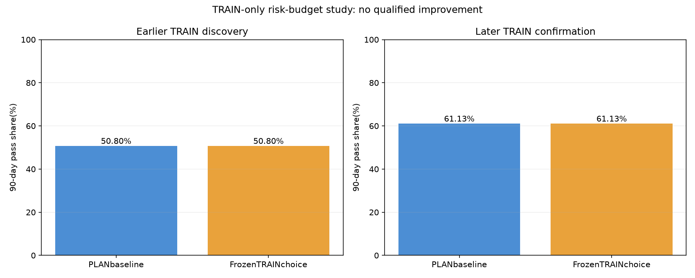

Fixed causal one-position PLAN book;45predeclaredpolicies including baseline. Discovery is earlierTRAIN;one winner is frozen before laterTRAINconfirmation. Validation,test,andforwardpaperoutcomes were not used. No live or paper configuration was changed.
| Period | Policy | Starts | Pass_pct | Fail_pct | Timeout_pct | Median_calendar_days |
|---|---|---|---|---|---|---|
| discovery | Baseline | 1632 | 50.80 | 20.47 | 28.74 | 50.00 |
| discovery | Frozenchoice | 1632 | 50.80 | 20.47 | 28.74 | 50.00 |
| confirmation | Baseline | 1752 | 61.13 | 21.23 | 17.64 | 41.00 |
| confirmation | Frozenchoice | 1752 | 61.13 | 21.23 | 17.64 | 41.00 |

{
"name": "INCUMBENT",
"fraction": 0.0,
"cap": 900.0,
"lock": false,
"top": 3,
"late": 5,
"late_day": 60
}Risk budget per entry = min(cap,fraction × remaining static-floor cushion),if fraction is positive. Otherwise use the incumbent cap. Sizes are also limited by the defensive/endgame ladder and50micros. Position quantity is determined before observing its outcome or MAE. Positivefraction policies reduce risk as the account approaches the fixedfloor. Lock skips later entries only after already-realized profit meets target and consistency.
Account scenario remains target$4,000,staticfloor−$2,000,DLL$1,000,55%best-dayconsistency,and90calendardays. These are the frozen incumbent research assumptions,not independently verified current account rules. DLL accounting uses a conservative whole-trade adverse bound,not an exact path/stopfill simulation. The book uses fixed reference-price normalization; results are historical scenarios,not actual normalized-dollar trades. Overlapping rolling attempts are dependent;44 alternatives create selection bias. No fresh unseen confirmation is available.
{
"period": "2017-2023SeptemberTRAINstarts",
"baseline": {
"n": 1752,
"pass_rate": 61.130136986301366,
"failure_rate": 21.232876712328768,
"timeout_rate": 17.636986301369863,
"median_pass_days": 41.0,
"minimum_attempt_balance_bound": -2469.733232593941,
"worst_success_balance_bound": -1972.4494781162923
},
"candidate": {
"n": 1752,
"pass_rate": 61.130136986301366,
"failure_rate": 21.232876712328768,
"timeout_rate": 17.636986301369863,
"median_pass_days": 41.0,
"minimum_attempt_balance_bound": -2469.733232593941,
"worst_success_balance_bound": -1972.4494781162923
},
"gate": false,
"extra_1point_cost_baseline": {
"n": 1752,
"pass_rate": 59.53196347031964,
"failure_rate": 22.203196347031966,
"timeout_rate": 18.2648401826484,
"median_pass_days": 42.0,
"minimum_attempt_balance_bound": -2488.733232593941,
"worst_success_balance_bound": -1978.5732392411091
},
"extra_1point_cost_candidate": {
"n": 1752,
"pass_rate": 59.53196347031964,
"failure_rate": 22.203196347031966,
"timeout_rate": 18.2648401826484,
"median_pass_days": 42.0,
"minimum_attempt_balance_bound": -2488.733232593941,
"worst_success_balance_bound": -1978.5732392411091
},
"paired_year_bootstrap": {
"block": "start-calendar-year",
"blocks": 7,
"replicates": 1999,
"mean_lift_pp": 0.0,
"percentile95_lift_pp": [
0.0,
0.0
],
"limitation": "Overlapping90-daystarts are dependent;onlysevenlaterTRAINyearblocks,so uncertainty is coarse andnotexternalconfirmation."
}
}Frozen protocol · Winner freeze before laterTRAIN · All discovery cells · Full result
The strongest alternative by discovery pass share used at most half of the remaining floor cushion per entry,with a$900cap and realized-pass lock. It passed49.69%,had0%modeledfloorfailures,andtimedout50.31%. The incumbentpassed50.80%,failed20.47%,andtimedout28.74%. A timeout still consumesanattempt;the saferalternative didnotimprovepassprobability andwasnotselectedorlater-TRAINconfirmed.
6,980 independent day comparisons matched the deployed PLAN baseline.25targetedcausality/accounttests passed. The daily stop is fixed at day start($400at1x,otherwise$700),rather than inspecting future trade risk to choose it. This preserves the deployed PLAN semantics even where an older research helper differs.